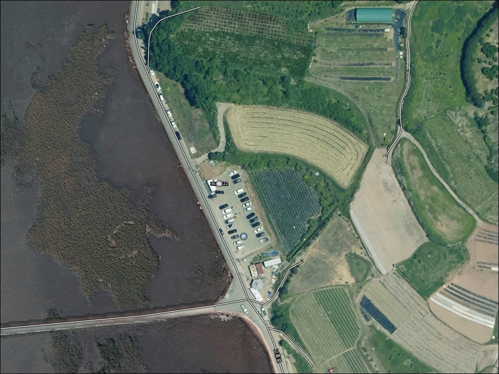
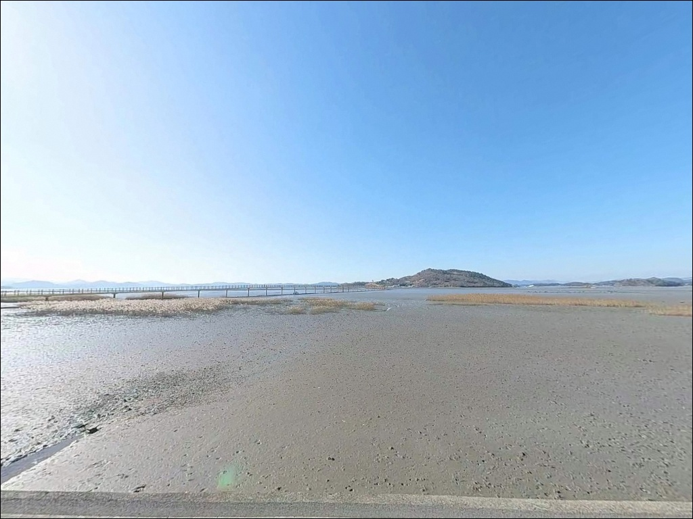
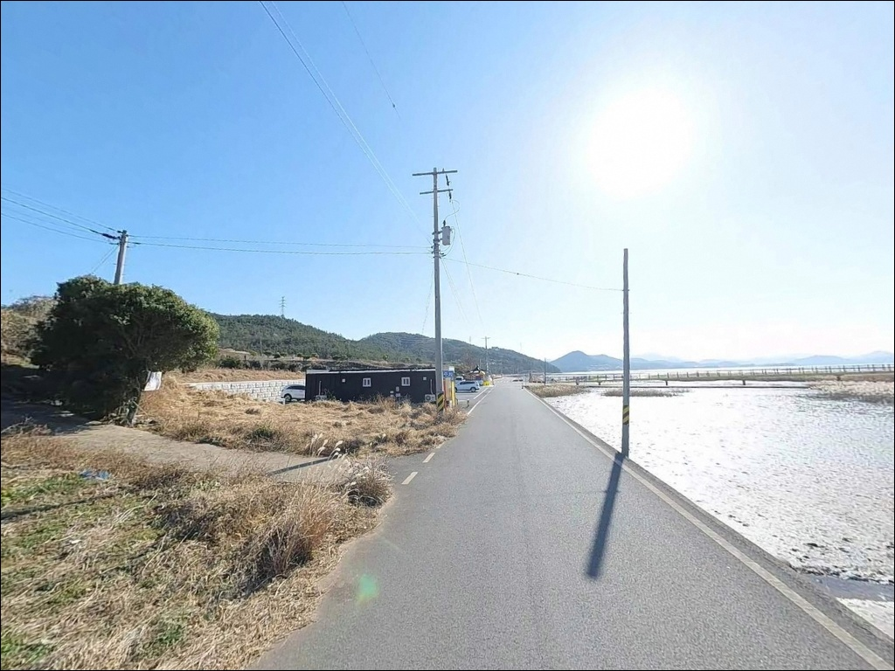
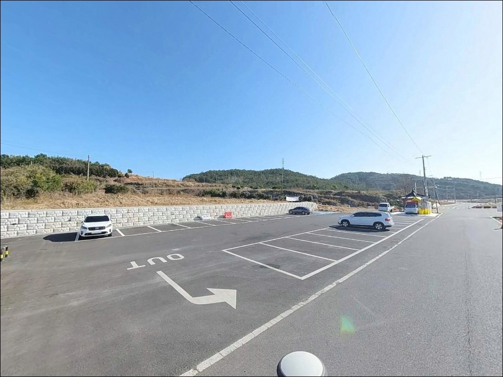
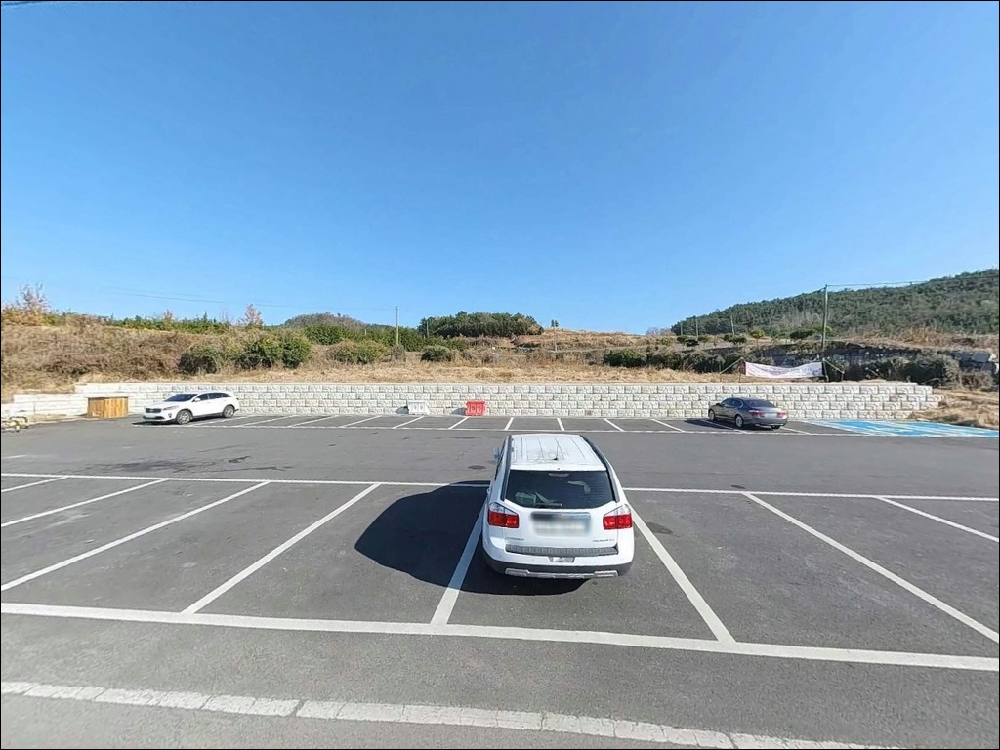
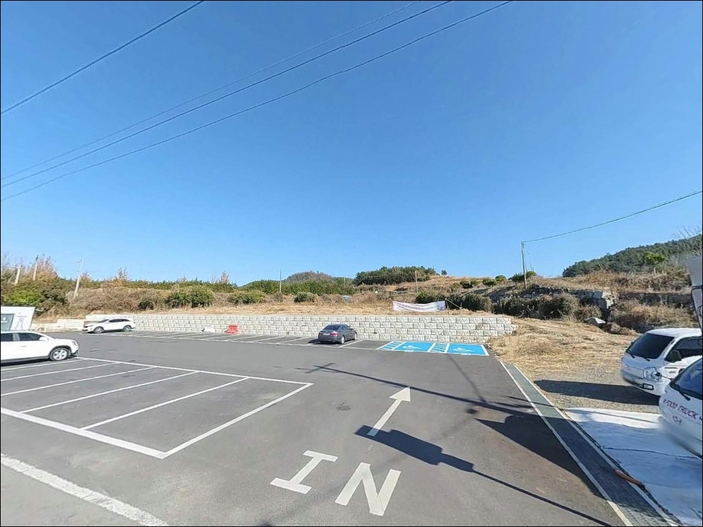
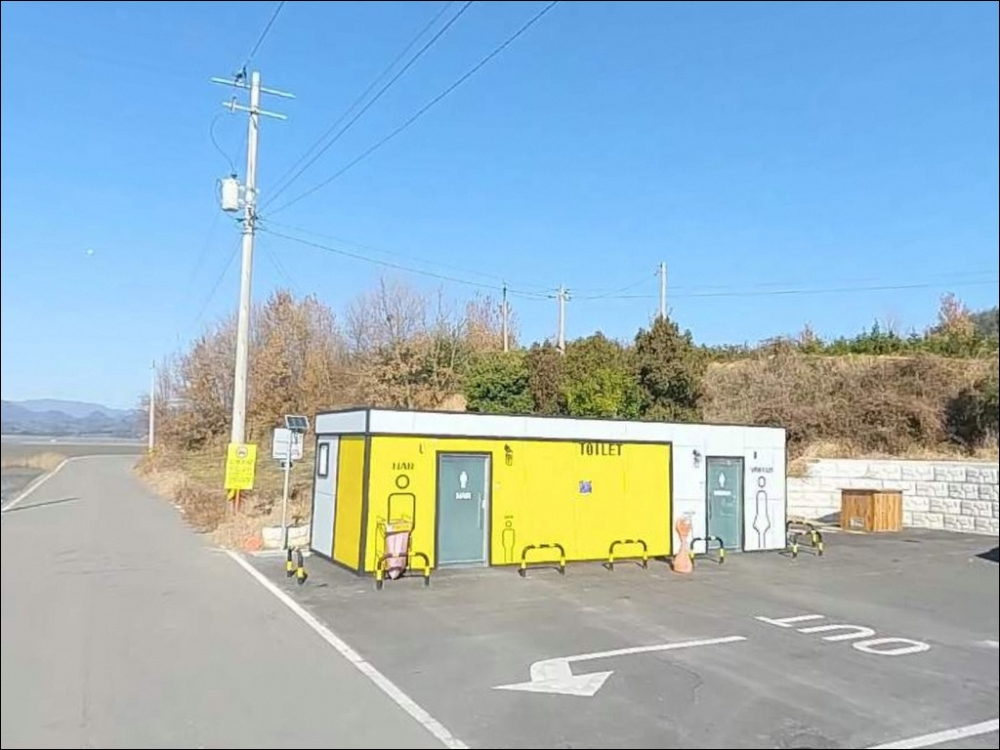
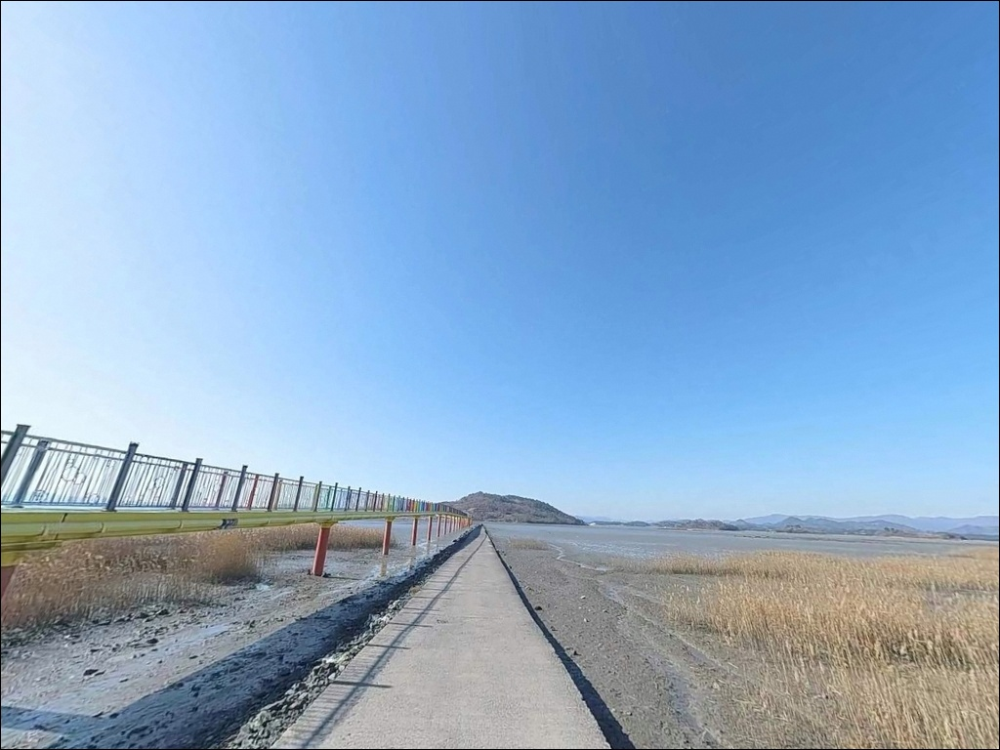
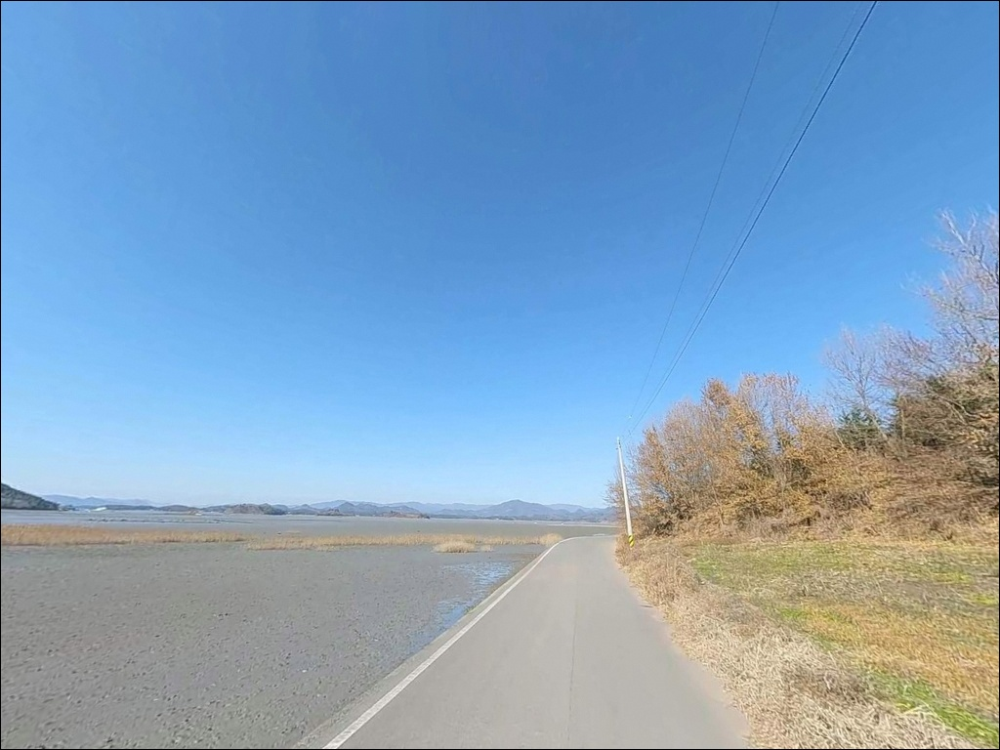

고흥 우도레인보우교 주차장 낚시는 만조 전후 물때를 맞춰야 한다
이 페이지에는 광고(제휴 링크 포함)가 있으며, 광고 링크를 통해 구매하면 운영자가 판매 수익 또는 수수료를 받을 수 있습니다. 포인트 사진: 카카오맵 스카이뷰·로드뷰. 이 페이지의 지도·사진 이미지는 카카오맵의 실제 서비스 이미지와 다를 수 있습니다.


포인트 안내
우도레인보우교 주차장
전남 고흥군 남양면 중산리 310-1
득량만 내만 깊숙이 자리한 이 포인트는
물때를 잘못 잡으면 낚시 준비조차 의미가 없어지는 구조입니다.
간조 시 갯벌이 광범위하게 드러나
수심이 거의 사라지는 지형이기 때문에,
만조 전후 타이밍이 이 포인트의 출조 성패를 가르는
핵심 판단 기준입니다.
전남 고흥군 남양면 중산리,
국내 최장 보행 인도교인 레인보우교 초입에 조성된
이 공공주차장은 포장 평지에 무료로 운영됩니다.
교량 인근 해안 석축과 갯벌 경계 구간이
낚시 포인트로 활용 가능한 지형이며,
아직 낚시 자료가 많지 않은 탐색형 연안에 해당합니다.
이 글은
우도레인보우교 주차장의
진입 동선, 차박 여건, 물때 판단 기준,
지형 기반 낚시 가능성에 집중합니다.
조황 단정이나 특정 어종 보장은
이 글의 범위에 포함되지 않습니다.

1. 진입 동선과 포인트 접근성
남양면 해안도로에서 직접 연결되는 포장도로를 따라
주차장까지 차량 진입이 원활합니다.
급경사나 비포장 구간이 없어
승용차부터 대형 SUV까지 진입에 어려움이 없는 구조이며,
주차장 내부 회차 공간도 확보되어 있습니다.
주차장 규모는 이 권역에서 상당한 편으로,
레인보우교 초입 전용 공용 주차장이
무료로 운영됩니다.
바닥면은 아스팔트 및 보도블록 포장이라
차박 베이스캠프로 활용하기에 평탄하고 안정적인 여건입니다.
주의할 점은 주말 낮 시간대입니다.
레인보우교가 고흥의 주요 관광지로 알려진 만큼
방문객 차량 밀도가 높아지는 시간대가 있습니다.
낚시 목적이라면 이른 아침이나
관광객이 빠진 야간 시간대 입장이
자리 확보와 동선 모두에서 유리합니다.

2. 차박 환경과 야간 체류 여건
레인보우교 주변은 관광지 성격의 경관 조명이 설치되어 있어
야간에도 완전한 암흑 환경은 아닙니다.
다리 쪽 조명이 주차장 일부를 밝히는 구조라
야간 시야 확보 자체는 무리가 없는 편입니다.
다만 갯벌 방향으로 내려서는 구간은
조명 영향권에서 벗어나므로 헤드랜턴이 필수입니다.
관광 차량은 낮 시간에 집중되고
야간에는 통행이 크게 줄어 상대적으로 조용해지는 구조입니다.
민가 밀집도가 낮은 편이라 프라이버시 여건은 나쁘지 않습니다.
다만 공공주차장 특성상
장시간 차박 여부는 현장 분위기를 직접 확인하는 것이
현실적인 판단 방법입니다.
이 포인트는 낚시를 마친 뒤
짧게 머물다 이동하는 보조 거점으로 활용하기에는 적합합니다.
화장실이 주차장 내에 설치되어 있어
장시간 체류 기본 여건은 갖춰진 편입니다.


3. 주변 편의시설 및 인프라 현황
주차장 내에 공중화장실이 설치되어 있습니다.
관광지 관리 시설로 기본 위생 여건은 갖춰진 편입니다.
쓰레기통도 현장에 배치되어 있으나
낚시 쓰레기는 반드시 직접 수거해서 나오는 편이 기본 매너입니다.
식품·미끼·낚시 소품을 보충하려면
남양면 소재지 방향으로 차량 5분 거리에
편의점 이용이 가능합니다.
낚시 전용 미끼점이나 대형 마트는 이 권역에 없으므로
크릴·청갯지렁이·채비 소품은 출발 전
고흥읍 또는 도양읍(녹동) 방향에서 준비하고 진입하는 것이
현실적인 경로입니다.
응급 상황 발생 시 고흥읍까지 거리가 상당합니다.
출발 전 연료와 비상약품을 갖추고 가는 편이 기본입니다.

4. 물때가 먼저다 — 방문 전 반드시 확인해야 할 조건
이 포인트에서 가장 먼저 확인해야 할 것은 물때입니다.
득량만은 서해 조류 영향권에 들어 조차가 큰 편으로,
간조 시에는 갯벌이 광범위하게 드러나
교량 하부를 포함한 상당 구간의 수심이
사라지다시피 합니다.
바다타임에서 남양면 기준 물때를 확인하고
만조 전후 2시간 이내를 노려 입장 시각을 맞추는 것이
이 포인트를 공략하는 기본 전제입니다.
갯벌이 노출되는 시간대에는
석축 하단이 드러나며 진입이 가능하지만,
조류가 다시 들어오는 속도가 빠를 수 있어
발판 위치를 수시로 확인하는 것이 안전 조건입니다.
들물이 빠르게 차오르는 구간에서
갯벌 안쪽으로 깊이 들어가지 않는 것이 기본 매너이자 안전 수칙입니다.
기상 변화가 낚시 조건에 영향을 주는 지역이라
당일 아침 기상청 예보를 한 번 더 확인하는 습관이
헛걸음을 줄이는 방법입니다.
레인보우교 다리 위에서의 낚시는 금지 구역이며,
주차장 인접 해안 석축 구간을
포인트로 이용하는 것이 원칙입니다.

5. 지형 기반 낚시 여건 분석
우도레인보우교 주차장 일대는
득량만 내만 깊숙이 자리한 갯벌 연안입니다.
교량이 육지와 우도 섬을 잇는 1.32km 구조라
교량 교각 주변으로 조류가 집중되는 수로 구간이 형성됩니다.
교각 하부 수로 방향이 이 포인트에서 가장 주목할 구간으로,
만조 전후에 조류가 살아나는 타이밍에
채비가 힘을 발휘하는 지형입니다.
바닥은 뻘과 모래가 혼합된 구조이며
석축 경계 쪽으로 잔자갈 지형이 섞입니다.
간조 시에는 수심이 크게 낮아지는 반면
만조 기준 교량 하부 수심은 1~5m 수준으로 파악됩니다.
수심 형태보다 조류 흐름과 물골 방향이
포인트를 결정하는 핵심 변수입니다.
이 일대 득량만 해역에서는
봄부터 가을까지 농어, 도다리, 숭어,
갑오징어, 낙지가 연안으로 접근하는 패턴이 형성됩니다.
특정 어종 조과를 단정하기 어렵지만
이런 지형 조건을 갖춘 연안에서
기대해볼 수 있는 어종 구성입니다.
출조 전에 고흥 남양면 또는 득량만 일대 조황을
미리 검색해 보시기 바랍니다.


6. 이 포인트에서 시도해볼 낚시 스타일
원투낚시가 이 지형과 가장 잘 맞는 방식입니다.
뻘 바닥 구조와 만조 시 확보되는 수심을 고려하면
석축 하단에서 30~40m 내외 거리를 투척해
수로 방향을 노리는 방식이 기본 전략입니다.
만조 전후 물이 활성화되는 구간이 원투 최적 타이밍이며,
지렁이 또는 크릴을 활용한
바닥 탐색 채비가 이 지형에 어울립니다.
루어낚시는 워킹 방식으로 접근하기 좋은 구조입니다.
주차장 인접 석축 구간을 따라 이동하며
교각 수로 방향으로 캐스팅하는 방식이
조류가 집중되는 지점을 노리기에 유리합니다.
들물이 들어오는 초들물~중들물 구간이 활성도가 높고
간조 전후는 수심이 낮아 루어 효율이 떨어집니다.
찌낚시는 교각 인근 수로처럼
조류 흐름이 살아나는 구간에서
반유동 채비로 운영하는 방식이 유효합니다.
물때에 따라 조건이 크게 달라지므로
만조 전후 1~2시간을 집중 공략 구간으로 두고
조류 방향을 먼저 확인한 뒤 자리를 잡는 것이 기본 순서입니다.

7. 조건이 맞지 않을 때 — 대안 포인트와 플랜 B 동선
이 포인트에서 물때가 맞지 않거나
주차장 혼잡으로 자리 잡기가 어렵다면
같은 남양면 내 해안을 따라
소형 방파제 구간을 탐색하는 것이 첫 번째 대안입니다.
득량만 연안 동일 해역 패턴이라 어종 조건이 유사하고,
방파제 발판이 있어 낚시 운영이 더 안정적입니다.
약 4~6km 거리에 위치한
발포 방면 방파제는 같은 해역에서
수심이 더 확보된 구조입니다.
진입과 주차 여건도 갖춰진 편이며
원투낚시와 루어낚시 모두 운영 가능한 대안 포인트입니다.
레인보우교 주차장에서 이동 시간이 짧아
물때를 보면서 탄력 있게 이동하기 좋은 동선입니다.
차박 베이스를 바꿔야 한다면
고흥만 방면 해안도로를 따라
주차 여건이 갖춰진 연안 구간을 탐색하는 것이
현실적인 대안입니다.
도양읍(녹동) 방향은 대형 항구 인프라가 있어
낚시점·편의점 이용과 함께
대체 포인트 탐색을 병행하기 좋은 기점입니다.

물때만 맞추면
레인보우교 주차장이 달리 보입니다
득량만 내만 연안을 조용히 탐색하고 싶은 낚시인이라면
이 포인트는 충분히 발품 값을 하는 곳입니다.
원투나 루어 워킹을 즐기되
넓은 무료 주차장과 화장실을 갖춘 조용한 연안을 찾는다면
기본 여건은 갖춰진 편입니다.
반면 물때 계산 없이 간조 시간대에 도착하거나
주말 낮에 자리를 잡으려 하면
갯벌 구경만 하고 돌아오는 상황이 됩니다.
물때 확인, 미끼 사전 준비, 입장 시각 조절,
이 세 가지가 이 포인트를
제대로 활용하는 방법입니다.
일몰 시각에 맞춰 레인보우교 야경을 보며
석축 옆에 자리를 깔고 만조를 기다리는 낚시라면
이 포인트만의 분위기를 온전히 즐길 수 있습니다.